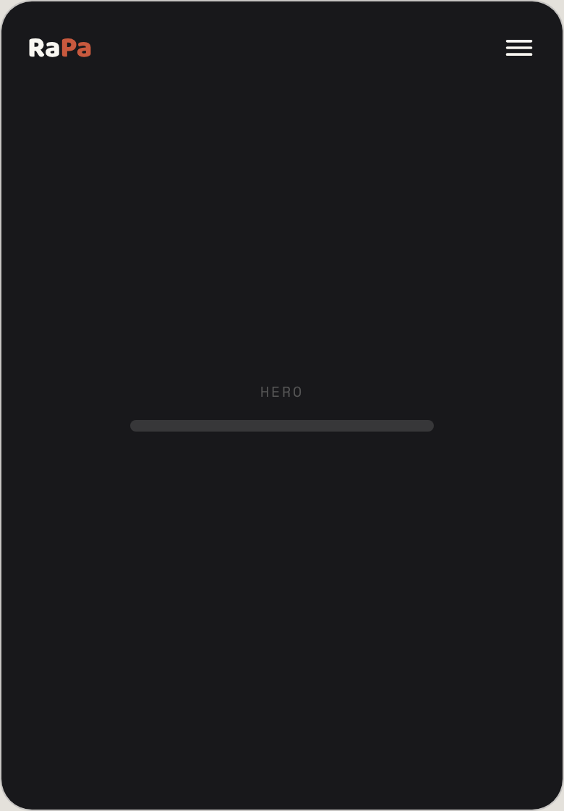
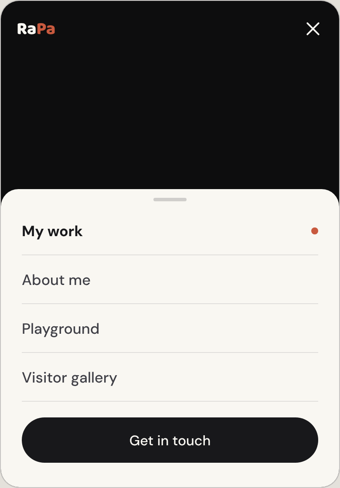
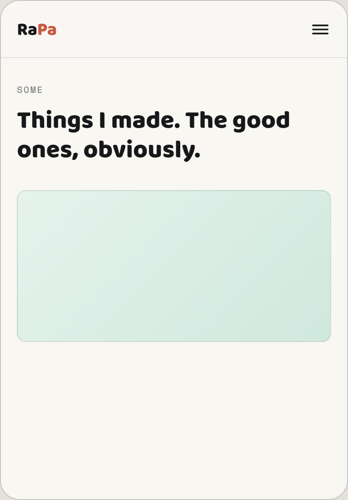
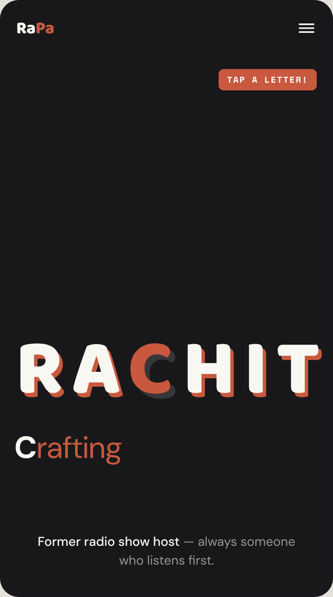
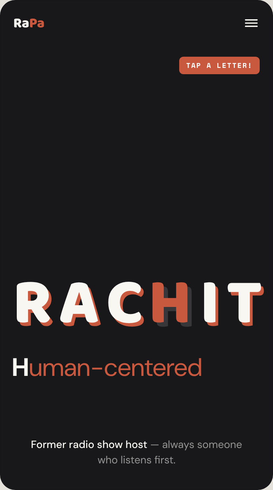
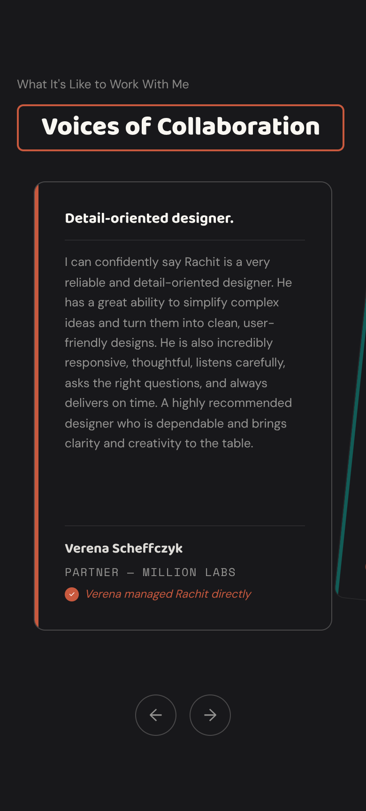
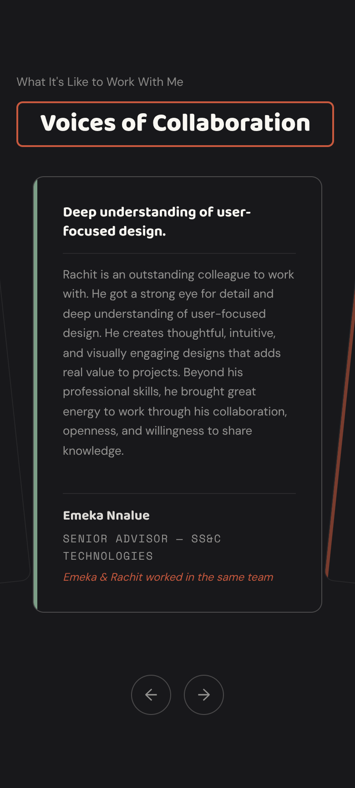

These pictures show only the designs Rachit chose, at phone width (390px). The older mockup files show all the options side by side. If anything here differs from those, these pictures win. Every size and behaviour is also written below and in the main brief. Laptops and tablets must not change. All of this applies to phone widths only (up to 640px).
Live files, one per design (open these in a browser, they work):
The pictures below are the same designs as stills.
1 — Phone navigation: the bottom sheet

Closed, over the dark top of the page. Transparent bar, white text.

Open. The page behind dims, and the menu button becomes an X.

Closed, after scrolling. The bar turns light with dark text.
Closed: the logo on the left and a menu button (three lines) on the right, with a tap area of at least 44 × 44px. There is no separate "Get in touch" button in the bar.
Open: the page dims. The bar stays visible and the menu button becomes an X. A panel slides up from the bottom with rounded top corners (about 20px) and a small handle. It has four rows, My work, About me, Playground and Visitor gallery, each 56px tall with a thin divider. The current page has a small terracotta dot. At the bottom is a full-width dark "Get in touch" button, 52px tall and fully rounded.
Bar colours: transparent with white text over the dark top of the page, and light with dark text only once "Some Things I made" reaches the nav. These are the existing rules and they don't change.
Closing: tap the X, tap the dimmed area, tap a link, or press Escape.
2 — The RACHIT headline: one row, the word underneath

"Crafting" showing. The letter C is lit.

"Human-centered" showing. The letter H is lit.
The letters: all six sit in one row across the full screen width with a 16px margin each side (text size about 92px on a 390px phone), scaling so all six fit on every phone width from about 360px up. They keep the laptop look: cream with a terracotta offset shadow, and the active letter in terracotta with a soft light shadow.
The word: under the row, one at a time, about 30px below it, at about 36px. Its first letter is cream and bold and the rest is terracotta.
Behaviour: it cycles through the six words by itself every 1.4 seconds. Tapping a letter shows that word and holds it for 4 seconds, then the cycle carries on. Each letter needs a tap area of at least 44px wide, including the narrow "I".
The sticker in the top right says "Tap a letter!" (on the laptop it still says "Hover over!"). The line at the bottom wraps onto two lines, centred.
3 — Testimonial cards on phones

The first card, centred. The next card peeks in from the right.

A card in the middle, with a neighbour on each side. The whole quote shows.
Width: the screen width minus 36px each side (318px on a 390px phone).
Centred: the front card is centred, including the first card. The neighbouring cards show at the edges, tilted and faded, as on the laptop.
Height: the cards grow to fit their text, all the same height, never less than today's 420px. No quote may be cut off.
Unchanged: the look of the cards (colours, accent bar, fonts, tick), the auto-advance and pause-on-hover.
Always show Rachit a before and after on a phone-sized screen before any of these go live.